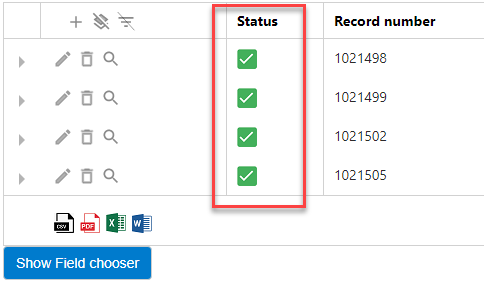

Metadata describes other data. It is used to navigate quickly through databases and find, manage and track information efficiently.
Well-known examples of metadata are Writer, Date Created, Date Modified and File Size. However, metadata can be anything that is need for your archiving needs. For example, Guid or Contract Number.
Metadata can be added to records and files.
When creating a record, you can select a file. The metadata of the file will be linked to the record.
Metadata that is added via the ZyLAB ONE Information Management Add-on is saved in a relational database and synchronized with (linked to) the archived documents with the help of a so-called background processor (Hangfire). You can view the status of this synchronization in the Records Overview.
